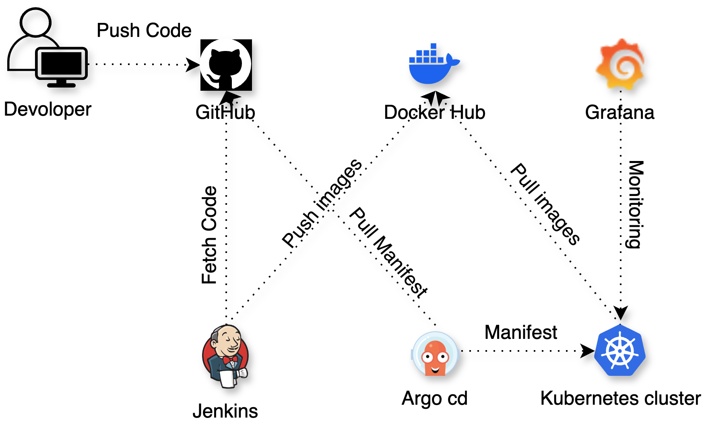

2024
DevOps application development process.
DevOps is a way of working that connects software development (Dev) and operations (Ops), helping teams build and deliver applications faster and more efficiently.
Continuous Integration/Continuous Delivery (CI/CD)
I/CD is a practice that helps automate the development, testing, and deployment of software. Help teams deliver new software and new features faster and more efficiently.
